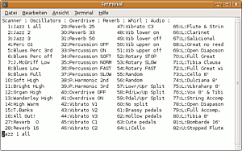

Beatrix
Archivierte Anleitung
Dieser Artikel wurde archiviert, da er - oder Teile daraus - nur noch unter einer älteren Ubuntu-Version nutzbar ist. Diese Anleitung wird vom Wiki-Team weder auf Richtigkeit überprüft noch anderweitig gepflegt. Zusätzlich wurde der Artikel für weitere Änderungen gesperrt.
Zum Verständnis dieses Artikels sind folgende Seiten hilfreich:
Beatrix  ist eine Anwendung für Musiker, die eine authentische Nachbildung einer elektromechanischen Orgel wie der legendären Hammond B3 suchen.
ist eine Anwendung für Musiker, die eine authentische Nachbildung einer elektromechanischen Orgel wie der legendären Hammond B3 suchen.
Das Programm ist zum Live-Spielen über eine Midi-Tastatur ausgelegt. Wie bei der B3 können zwei Tastaturen (upper, lower) und ein Basspedal benutzt werden.
Die Orgel wird im Terminal ausgeführt, eine grafische Oberfläche gibt es nicht. Dies fällt aber nicht ins Gewicht, wenn für die Bedienung der Zugriegel u.a. ein Hardware-Controller (z.B. von Doepfer) benutzt wird. Weil die Midi-Steuerung sehr zuverlässig funktioniert, ist es prinzipiell auch möglich, auf eine Bildschirmanzeige komplett zu verzichten.
| Hammond L 100 |
Einige Vorteile von Beatrix sind:
Hervorragender Sound, absolut konkurrenzfähig zu kommerziellen Hard- und Softwarelösungen.
Alle wichtigen Spielhilfen (Zugriegel, Vibrato, Percussion, Leslie usw.) durch Midi-Controller in Echtzeit steuerbar
Über Konfigurationsdateien vielseitig einstellbar und an den eigenen Geschmack anzupassen.
Nachteilig ist:
Keine jack-Unterstützung. Setzt auf OSS bzw. ALSA auf und beansprucht das Soundsystem komplett.
Gegenläufige Steuerung von Lautstärke und Verzerrung per Midi ist schwierig - es droht digitales Clipping.
Zwar kostenlose, aber sehr restriktive Softwarelizenz.
Beatrix ist weitgehend distributions-unabhängig und läuft unter Ubuntu ebenso wie unter Suse, Debian, Red Hat u.a.
Installation¶
Beatrix kann von der Downloadseite heruntergeladen werden (Lizenz beachten). Die aktuelle Version ist 0.41.
Hinweis!
Fremdsoftware kann das System gefährden.
Das Archiv braucht lediglich in einen neu angelegten Ordner entpackt zu werden [3], das Programm ist dann sofort lauffähig. Im selben Ordner befinden sich auch die Dateien default.cfg und default.pgm, die zur Konfiguration und Klangeinstellung dienen.
Wenn eine Midi-Schnittstelle (/dev/midi1) vorhanden ist, öffnet man ein Terminal, wechselt ins Programmverzeichnis und startet Beatrix mit [1]
./sbeatrix
Standardmäßig empfängt Beatrix auf den Midi-Kanälen 1, 2 und 3 (oberes/unteres Manual und Pedal). Wenn jetzt eine Midi-Tastatur und Lautsprecher angeschlossen sind, kann man sofort loslegen.
|  |
| Beatrix |
Im Programmfenster werden alle verfügbaren Presets angezeigt. Auf dem Bildschirmfoto sind die Presets Nr. 1-16 vom Benutzer erstellte Klänge, Nr. 27-54 dienen zur Echtzeit-Steuerung von Klangfunktionen, Nr. 55-82 sind voreingestellte Sounds. In der untersten Zeile erscheint das momentan gewählte Preset.
Live-Spielen und Steuerung per MIDI¶
Die Lautstärke (Schweller) ist als Standard dem Modulationsrad des Steuerkeyboards zugeordnet, per Fußschalter (Sustainpedal) wechselt das Leslie zwischen langsam und schnell. Diese Zuweisungen lassen sich in der Datei default.cfg [2] ändern.
Für die Steuerung des Klangs - Zugriegel, Vibrato, Percussion, Verzerrung etc - gibt es zwei Möglichkeiten, die auch kombiniert werden können:
Echtzeit-Steuerung per Midi-Controller: Den Zugriegeln, den Vibrato- Percussion- u.a. Klangparametern ist in der Datei default.cfg jeweils eine Midi-Controllernummer zugeordnet, und zwar separat für oberes/unteres Manual und Pedal. Damit lassen diese Einstellungen sich beim Spielen live (in Echtzeit) steuern. Mit einem Hardware-Zugriegel-Controller hat man die selbe Bedienung und ähnliche Ausdrucksmöglichkeiten wie bei einer "echten" elektromechanischen Orgel. Nachteil: Solche Controller sind meist teuer.
2. Speichern der Einstellungen in Presets: Die o.g. Klangeinstellungen können auch in Presets gespeichert werden, die man mit Midi-Programmwechsel-Befehlen aufruft. Es genügt dann ein Tastendruck zum Wechsel des Sounds, ein teurer Controller ist nicht notwendig, aber es fehlt eben auch die Möglichkeit, beim Spielen spontan in den Klang einzugreifen. Die Presets werden in der Datei default.pgm gespeichert. In der Datei popular.pgm findet man Beispiele für gut klingende und populäre Orgelklänge.
Außerdem lassen sich einzelne Funktionen wie Vibrato, Percussion etc. über Midi-Programmwechsel direkt ein- und ausschalten.
Konfiguration für Orgelprofis¶
Die Datei default.cfg bietet viele Möglichkeiten, die Bedienung und den Klang von Beatrix an die eigenen Bedürfnisse anzupassen. U.a. kann hier eingestellt werden:
Midi-Kanäle und Controllernummern
Geschwindigkeit und Beschleunigungsverhalten des Leslie-Effekts (Rotary)
Details zur Simulation von Tonrädern, Tastenklick, Vibrato, Leslie, Verzerrung u.a.
Viele Parameter sind sehr technisch, aber gut erläutert und beim Lesen lernt man viel über das Funktionieren einer "richtigen" Orgel. Es sei erwähnt, dass die Standardeinstellungen ziemlich gut klingen, man kann den Klang der Orgel auf diese Weise also auch verschlechtern - oder verfremden, je nach Geschmack.
Hinweis:
Wenn an eine kurze Reaktionszeit der Orgel (Midi-Latency) hohe Ansprüche gestellt werden, empfiehlt es sich, den Echtzeitkernel oder eine spezielle Audio-Distribution wie Ubuntu Studio zu benutzen.
- Erstellt mit Inyoka
-
 2004 – 2017 ubuntuusers.de • Einige Rechte vorbehalten
2004 – 2017 ubuntuusers.de • Einige Rechte vorbehalten
Lizenz • Kontakt • Datenschutz • Impressum • Serverstatus -
Serverhousing gespendet von